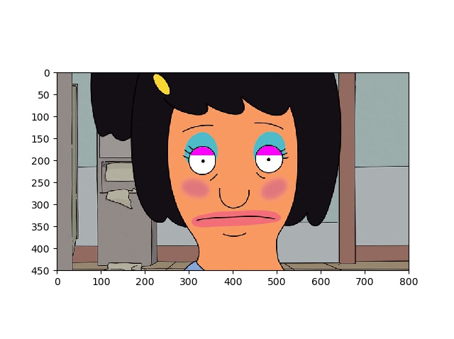
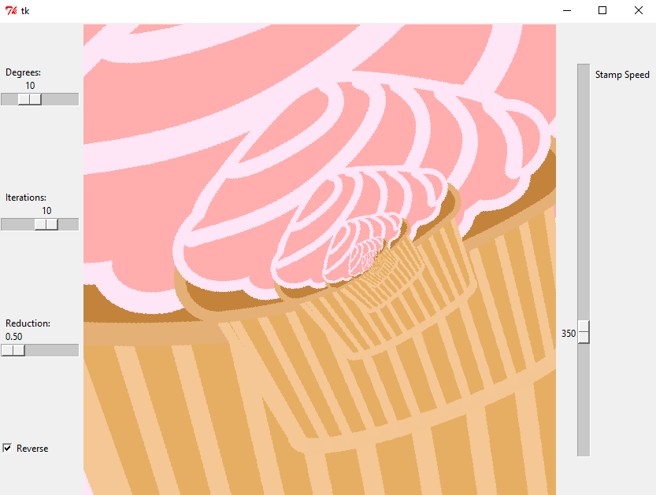
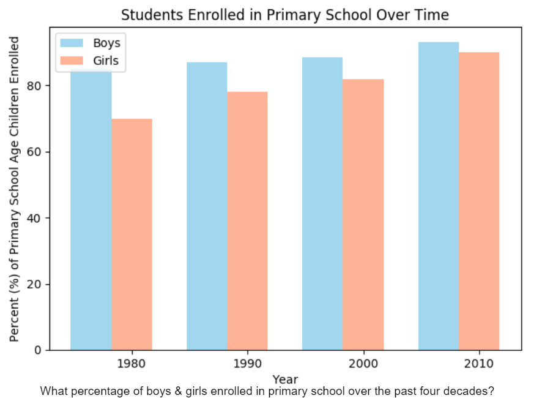
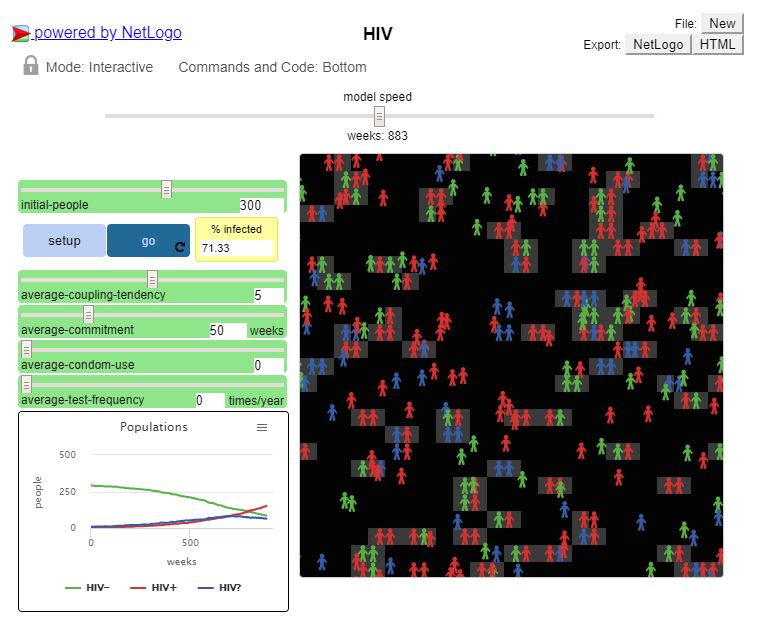

Home
Portfolio
About Me


Space Battle (Scratch Game)
a classic space shooter game inspired by
the retro arcade games of the 80s !

To-Do List (MIT App)
a simple, easy-to-use to-do list app that
helps you keep track of your daily tasks,
shopping lists, etc. !

Interactive Fiction (Python): "Kevin in Love"
play as kevin the minion and help him fall
in love in this interactive story !

The Ultimate Minion Quiz (Python)
Think you know your minions? Come test
your expertise in the Ultimate Minion Quiz!

Image Manipulation (Python)
Click the 2nd picture to view the code
we constructed to edit
Tina Belcher's fabulous makeup!

GUI (Python)
In collaboration, we created a GUI program
that simultaenously rotates, shrinks, and duplicates
the original cupcake image.

Data Representation (Python)
In collaboration, we created a data representation
of the number of children ( male & female) that
enrolled in primary school over the past
four decades.

HIV NetLogo (Python)
In collaboration, we modified the code
of the original HIV simulation by altering the
rate of infection.